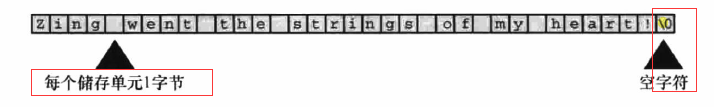
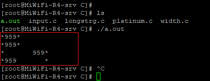
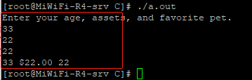

字符串（character string）是一个或多个字符的序列。比如：“i am a teacher!” 注意：双引号不是字符串的一部分，它的作用是告知编译器它包含起来的内容是字符串。对比单引号用于标识单个字符。
C语言当中，没有专门存储字符串的变量类型，字符串都被存储在char类型的数组当中（数组由联系的存储单元组成，同类型数据元素的有序序列）且使用空字符“\0”来标识字符串的结束。详细如下图：

注意：字符串和字符是不同的。比如：字符串常量“A”和字符常量‘A’它们的区别在于‘A’是基本类型（char）,"A"是派生类型（char 数组）。另外区别“A”实际上是由两个字符组成的：‘A’+控制符。
3.1；符号常量（明示常量）是在编译程序时，程序中所有的符号常量被替换为定义的初始值，且不会被程序无意间改变值。同时也是方便日后程序的修改。（预编译器可以使用#include包含其他文件的信息同时也可以用来定义常量）
3.2；定义符号常量格式：#define NAME value （详细参考下面例子）
#include <stdio.h>
#define PI 3.14159 //定义一个PI字符常量
int main(void)
{
float area, circum, radius;
printf("What is the redius of your pizza?\n")
scanf("%f",&radius);
area = PI * radius * radius; //使用字符常量，编译过程中自动转换为数值3.14159
circum = 2.0 * PI * radius;
printf("Your basic pizza parameters are as follows:\n");
printf("circumference = %1.2f, area = %1.2f\n",circum,area);
return 0;
}const关键字是C90标准新增的，作用是限定一个变量为只读。举例：
const int a = 12; //a变量在程序中不可更改为只读。具体以后详细讲解：
明示常量相当于符号常量。常见使用如下：
头文件limits.h包含明示常量如下：
| 明示常量 | 含义 |
| CHAR_BIT | char类型的位数 |
| CHAR_MAX | char类型的最大值 |
| CHAR_MIN | char类型的最小值 |
| SCHAR_MAX | signned char 类型的最大值 |
| SCHAR_MIN | signned char 类型的最小值 |
| UCHAR_MAX | unsigned char 类型的最大值 |
| SHRT_MAX | short类型的最大值 |
| SHRT_MINN | short类型的最小值 |
| USHRT_MAX | unsigned char 类型的最大值 |
| INT_MAX |
int类型的最大值 |
| INT_MIN | int类型的最小值 |
| UINT_MAX | unsigned int 的最大值 |
| LONG_MAX | long类型的最大值 |
| LONG_MIN | long类型的最小值 |
| ULONG_MAX | unsigned long 类型的最大值 |
| LLONG_MAX | long long 类型的最大值 |
| LLONG_MIN | long long 类型的最小值 |
| ULLONG_MAX | unsigned long log 类型的最大值 |
头文件float.h包含明示常量如下：
| 明示常量 | 含义 |
| FLT_MANT_DIG | float类型的尾数位置 |
| FLT_DIG | float类型的最少有效数字位数（十进制） |
| FLT_MIN_10_EXP | 带全部有效数字的float类型的最小负指数（以10为底） |
| FLT_MAX_10_EXP | float类型的最大正指数（以10为底） |
| FLT_MIN | 保留全部精度的float类型最小正数 |
| FLT_MAX | float类型的最大正数 |
| FLT_EPSILON | 1.00和比1.00大的最小float类型值之间的差值 |
6.1；printf()函数为输出函数，且和scanf()函数一起称之为输入/输出函数。
printf()函数格式为：printf（格式字符串，待打印项目1，待打印项目2，。。。） 其中“格式字符串”是双引号括起来的内容，使用“转换说明”符号来指定“待打印项目”值代入的位置以及数据转换可显示的形式。“待打印项目”可以是常量，变量，表达式。举例：
#include <stdio.h>
#define PI 3.14159
int main(void)
{
int number = 7;
printf("The number is %d\n",number); //%d占位符，转换说明：有符号的十进制整数
return 0;
}注意：格式字符串中的转换说明一定要与后面的每个项目匹配。
6.2；转换说明把以二进制格式存储在计算机中的值转换成一系列字符（字符串）以便于显示。printf()函数常见转换说明符号如下图：
| 转换说明 | 输出 |
| %a | 浮点数，十六进制数和p计数法(C99/C11） |
| %A | 浮点数，十六进制数和p计数法(C99/C11） |
| %c | 单个字符 |
| %d | 有符号十进制整数 |
| %e | 浮点数，e计数法 |
| %E | 浮点数，e计数法 |
| %f | 浮点是，十进制计数法 |
| %g | 根据值的不同，自动选择%f,%e,%e格式用于指数小于-4或者大于或等于精度时 |
| %G | 根据值的不同，自动选择%f,%e,%e格式用于指数小于-4或者大于或等于精度时 |
| %i | 有符号实际值整数 |
| %o | 无符号八进制整数 |
| %p | 指针 |
| %s | 字符串 |
| %u | 无符号十进制整数 |
| %x | 无符号十进制整数，使用十六进制数0f |
| %X | 无符号十进制整数，使用十六进制数0F |
| %% | 打印一个百分号 |
6.3；printf()转换说明修饰符
在%和转换字符之间插入修饰符可修饰基本的转换说明,比如：%4d 表示十进制整数位，保留4个最小字段宽度。如下表显示基本使用修饰符：
| 修饰符 | 含义 |
| 标记 | 标记包含5种类，详细查看下文标记表格。举例：“%-10d” |
| 数字 |
最小字段宽度 注意：如果该字段不能容纳带打印的数字或字符串，系统默认会使用更宽的字段。 举例：“%4d” |
| .数字 |
精度 对于%e，%E，%f，转换，表示小数点右边数字的位数 对于%g，%G 表示有效数字最大的位数 %s 表示待打印字符的最大数量 整型转换，表示待打印数字的最小位数 举例：“%5.2f”打印一个浮点数，字段宽度5字符，其中小数点后面两位数字 |
| h |
和整数转换说明一起使用，表示short int 或unnsigned short int 类型的值 举例：“%hu” |
| hh |
和整数转换说明一起使用，表示signed char 或者 unsigned char 类型的值 举例：“%hhu” |
| j |
和整型转换说明一起使用，表示inntmax_t或uintmax_t类型的值、 举例：“%jd” |
| l |
和整型转换说明一起使用，表示long int 或 unsigned long int 类型的值 举例：“%ld” |
| ll |
和整型转换说明一起使用，表示long long int 或 unsigned long long int 类型的值 举例：“%lld”,"%8lld" |
| L |
和浮点转换说明一起使用，表示long double 类型的值 举例：“%Ld”,"%10.4Le" |
| t |
和整型转换说明一起使用，表示ptrdiff_t类型的值。ptrdiff_t是两个指针差值的类型 举例：“%td”,"%19.3ti" |
| z |
和整型转换说明一起使用，表示size_t 类型的值。size_t是sizeof返回的类型 举例：“%zd”,"%12zd" |
printf()中的标记，详细查看如下表格：
| 标记 | 含义 |
| - |
待打印项左对齐。即，从字段的左侧开始打印该项 举例：“%-20s” |
| + |
有符号值为正，则在值前面显示加号；为负，则在前面显示减号 举例：“%+6.3f” |
| 空格 |
有符号值为正，则在值前面显示前导空格（不显示任何符号）；为负。则在值前面显示减号 +标记覆盖一个空格 举例：“%6.3f” |
| # |
把结果转换为另一种形式，如果是%o格式，则以0开始；如果是%x 或%X格式，则以0x 或0X开始；对于所有的浮点格式，#保证了即使后面没有任何数字，也打印一个小数点符号。对于%g和%G格式，#防止结果后面的0被删除。 举例：“%#o” |
| 0 | 对于数值格式，用前导0代替空格填充字段宽度。对于整数格式，如果出现-标记或指定精度，则忽略该标记 |
使用修饰符和标记的实例：
示例一；字段宽度在打印整数时效果。
#include <stdio.h>
#define PAGES 959
int main(void)
{
printf("*%d*\n",PAGES);
printf("*%2d*\n",PAGES); //字段宽度为3位数字，规定输出2个字段宽度。所以默认自动扩大以符合整数成都
printf("*%10d*\n",PAGES);
printf("*%-10d*\n",PAGES);
return 0;
}运行结果如图：

示例二；浮点型修饰符组合
。。。。。。
7.4；printf()的返回值
printf()返回值时返回打印字符的个数。
scanf()函数用来输入数据，因为键盘输入都是文本（字母，数字，标点符号）。比如我要输入整数2019，就要输入字符2，0，1，9 。但是计算机存储的是数值而不是字符串，所以需要通过scanf()函数将字符依次转换成数值。而printf()函数行为相反。
scanf()函数使用格式：scanf(“格式字符串”，指向变量指针)
格式字符串：用来表明字符输入流的目标数据类型
指向变量指针：1；如果读取基本变量类型的值，则变量名称前加一个&。2；如果是字符串读入字符数组，不要使用&
使用举例：
#include <stdio.h>
int main(void)
{
int age;
float assets;
char pet[30];
printf("Enter your age, assets, and favorite pet.\n");
scanf("%d %f",&age,&assets);
scanf("%s",pet);
printf("%d $%.2f %s\n",age,assets,pet);
return 0;
}演示结果：

7.1；scanf()函数转换说明如下表：
| 转换说明 | 含义 |
| %c | 把输入解释成字符，包括空白 |
| %d | 把输入解释成有符号十进制整数 |
| %e,%f,%g,%a | 把输入解释成浮点数 |
| %E,%F,%G,%A | 把输入解释成浮点数 |
| %i | 把输入解释成有符号十进制整数 |
| %o | 把输入解释成有符号八进制整数 |
| %p | 把输入解释成指针（地址） |
| %s | 把输入解释成字符串。从第一个非空白字符开始，到下个空白字符之前的所有字符都是输入 |
| %u | 把输入解释成无符号十进制整数 |
| %x,%X | 把输入解释成有符号十六进制整数 |
7.2；scanf()转换说明中的修饰符如下表：
| 转换说明 | 含义 |
| * | 抑制赋值，详细查看下文“printf()和scanf()的*修饰符” |
| 数字 |
最大字段宽度。输入达到最大字段宽度处，或者第一次遇到空白字符停止 举例：“%10s” |
| hh |
把整数作为signed char 或unsigned char 类型读取 举例：“%hhd” |
| ll |
把整数作为long long 或 unsigned long long 类型读取 举例：“%lld” |
| j |
在整型转换说明后面时，表明使用intmax_t 或uintmax_t类型 举例：“%jd” |
| z |
在整型转换说明后面时，表明使用sizeof的返回类型 |
| t | 在整型转换说明后面时，表明使用表示两个指针差值的类型 |
| h,l,L |
如果我们不希望预先定义字段宽度，希望通过程序来指定。那么我们可以使用*来代替字段宽度，但是还是需要使用一个参数来告诉函数具体的字段宽度是多少。举例如下：
#include <stdio.h>
int main(void)
{
unsigned width, precision;
int number = 256;
double weight = 242.5;
printf("Enter a field width:\n");
scanf("%d",&width)
printf("The number is :%*d:\n",width,number);
printf("Now enter a width and a precision:\n");
scanf("%d %d",&width,&precision);
printf("weight = %*.*f\n",width,precision,weight); //"%*.*f"中两个*分别被width,precision参数代替
printf("Done!\n");
return 0;
}